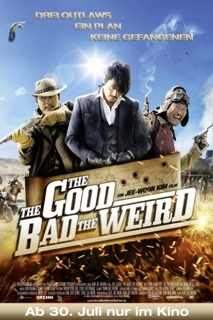
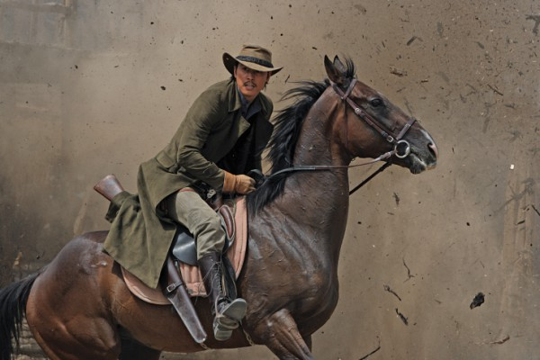

#3817 The Good, the Bad, the Weird
 
 IMDB-Wertung: 7.3 / 10
IMDB-Wertung: 7.3 / 10  Metascore: 0
Metascore: 0 
Drei Outlaws - Ein Plan - Keine Gefangenen: In der Mandschurei der 1930er, einem Land der Gesetzlosigkeit und Revolverhelden, führt das Schicksal drei unterschiedliche Ganoven auf der Suche nach einer mysteriösen Karte zusammen. Do-won, the Good, ist ein gerissener, einsamer Kopfgeldjäger, der sich nicht in die Karten schauen lässt. Chang-yi, the Bad, führt eine Bande knallharter Ganoven an. Er kann es nicht ertragen, den Kürzeren zu ziehen. Tae-goo, the Weird, ist ein scheinbar unbedarfter Zugräuber, der neun Leben zu haben scheint.
Jahr: 2008
Dauer: 129 Minuten
FSK: 16
Land: Süd-Korea Studio: Splendid FilmTonspuren:
Untertitel: Deutsch,
Auflösung: 1080p (1920x816) Größe: 11161 MB
Genre: Action, Komödie, Abenteuer, Western
Regisseur: Jee-woon Kim
Drehbuch: Craig Pearce
Soundtrack:
Darsteller:
 Kang-ho Song als Yoon Tae-goo / The Weird
Kang-ho Song als Yoon Tae-goo / The Weird Byung-hun Lee als Park Chang-yi / The Bad
Byung-hun Lee als Park Chang-yi / The Bad-  Woo-sung Jung als Park Do-won / The Good
 Young-chang Song als Kim Pan-joo
Young-chang Song als Kim Pan-joo Dal-su Oh als Messenger for Kim Pan-joo
Dal-su Oh als Messenger for Kim Pan-joo- Jin-yeong Jeong als Chang-yi's Gang
- Min-Young Park als Hooker with a Bag
- Ji-won Uhm als Na-yeon , uncredited
- Je-mun Yun als Byung-choon
- Seung-su Ryu als Man-gil
- Byung-ho Son als Seo Jae-sik
- Cheong-a Lee als Song-yi
- Kwang-il Kim als Two Blades
 Dong-seok Ma als Bear
Dong-seok Ma als Bear- Kyeong-hun Jo als Doo-chao
- Hang-soo Lee als Kanemaru
- Hyun Joong Kang als Ghost Market Gang Leader
- Sung-min Lee als Chef
- Chang-sook Ryu als Granny
- Young-mok Yun als Chang-yi's Gang
- Cheol-ho Yeom als Chang-yi's Gang
- Seung-won Seo als Chang-yi's Gang
- Deok-jae Jo als Chang-yi's Gang
- Kil-hyun Kim als Chang-yi's Gang
- Jin-young Noh als Chang-yi's Gang
- Il-yong Oh als Chang-yi's Gang
- Young-jae Kwak als Chang-yi's Gang
- Ki-jun Hong als Chang-yi's Gang
- Seung-jae Jeon als Chang-yi's Gang
- Geum-Seong Kil als Chang-yi's Gang
- Yong-jae Cho als Chang-yi's Gang
- Myung-hun Yang als Chang-yi's Gang
- Jae-seung Ryu als Chang-yi's Gang
- Man-ki Kim als Chang-yi's Gang
- Pil-joong Kim als Chang-yi's Gang
- Kyung-man Choi als Chang-yi's Gang
- Mi-nam Jeong als Tri-nation Gang
- Ha-joon Kim als Tri-Nation Gang
- Han-sol Lee als Tri-nation Gang
- Seung-joon Lee als Tri-nation Gang
- Seol-gu Lee als Tri-nation Gang
- Seung-chu Kang als Tri-Nation Gang
- Rock-jin Choi als Tri-Nation Gang
- Seung-hyun Song als Tri-Nation Gang
- Kwang-su Lee als Tri-nation Gang
- Jae-eun Kang als Tri-Nation Gang
- Sung-gyun Park als Tri-Nation Gang
- Woo-sang Yeom als Tri-nation Gang
- Mavlyanov Jasurbek als Tri-Nation Gang
- Bana Tehrani Ali Asghar als Tri-Nation Gang
Datei: X:\FSK18-2000-2009\Good, the Bad, the Weird, The (2008, FSK16, 1920x816).mkv seit 16.06.2016
Festplatte: FSK18
 Es gibt insgesamt 106 Filme in der Gruppe 'FSK18-2000-2009'
Es gibt insgesamt 106 Filme in der Gruppe 'FSK18-2000-2009'